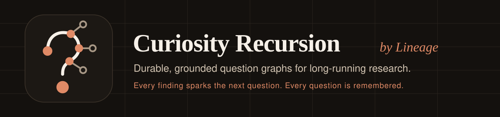
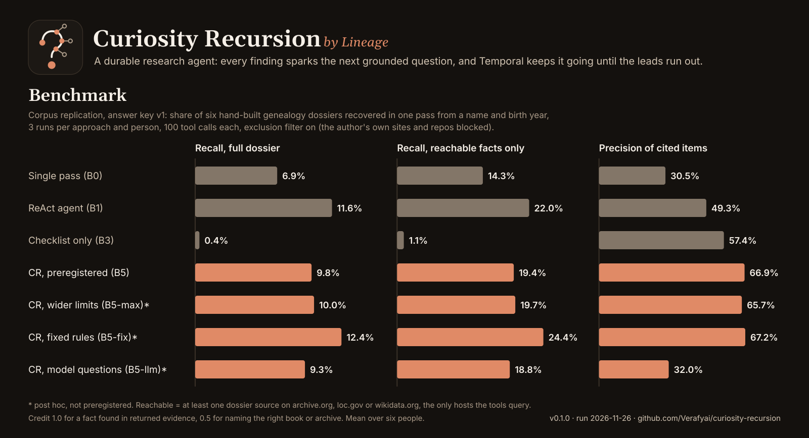
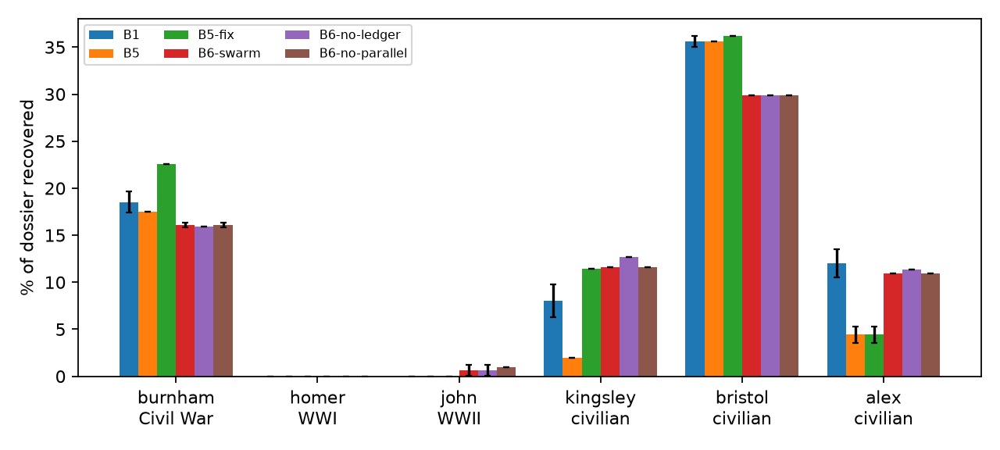

Click to read the research paperCode on GitHubRelease v0.1.0
Curiosity Recursion is a durable research agent for genealogy: every finding sparks the next grounded question, every question is remembered, and Temporal keeps the run alive through crashes, flaky archives and replies that take weeks.

Answer key v1 (frozen 2026-11-26), result set `v0.2-live-v0.2`, code commit `3569177`, 3 runs per strategy per person, budget 100 tool calls. Mean ± sd over runs, in percent. Spec: .eval/EVAL-SPEC.md
| Rank | Strategy | Erastus Burnham (Civil War) | Homer St. John (WWI) | John St. John (WWII) | Kingsley Perry (civilian) | Edgar H. Bristol (civilian) | Alex St. John (civilian) | Overall | Reachable only | Precision | Penalised | Spend | Status |
|---|---|---|---|---|---|---|---|---|---|---|---|---|---|
| 1 | B5-fix: CR rules2 (post hoc fix) | 22.6 ± 0.0 | 0.0 ± 0.0 | 0.0 ± 0.0 | 11.4 ± 0.0 | 36.2 ± 0.0 | 4.4 ± 0.9 | 12.4% | 24.6% | 67.3% | 11.7% | $0.00 | post hoc |
| 2 | B1: ReAct LLM agent | 18.5 ± 1.1 | 0.0 ± 0.0 | 0.0 ± 0.0 | 8.0 ± 1.7 | 35.6 ± 0.6 | 12.0 ± 1.5 | 12.4% | 24.1% | 55.8% | 11.9% | $0.47 | preregistered (v0.1) |
| 3 | B6-no-ledger: swarm without ledger rules (ablation) | 15.9 ± 0.0 | 0.0 ± 0.0 | 0.7 ± 0.6 | 12.7 ± 0.0 | 29.9 ± 0.0 | 11.4 ± 0.0 | 11.8% | 23.1% | 80.2% | 11.8% | $0.00 | preregistered ablation (v0.2) |
| 4 | B6-no-parallel: swarm with one worker (ablation) | 16.1 ± 0.3 | 0.0 ± 0.0 | 1.0 ± 0.0 | 11.6 ± 0.0 | 29.9 ± 0.0 | 10.9 ± 0.0 | 11.6% | 22.7% | 76.0% | 11.6% | $0.00 | preregistered ablation (v0.2) |
| 5 | B6-swarm: CR v0.2 swarm (preregistered) | 16.1 ± 0.3 | 0.0 ± 0.0 | 0.7 ± 0.6 | 11.6 ± 0.0 | 29.9 ± 0.0 | 10.9 ± 0.0 | 11.5% | 22.7% | 76.3% | 11.5% | $0.00 | preregistered (v0.2) |
| 6 | B5: CR (preregistered) | 17.5 ± 0.0 | 0.0 ± 0.0 | 0.0 ± 0.0 | 1.9 ± 0.0 | 35.6 ± 0.0 | 4.4 ± 0.9 | 9.9% | 19.7% | 66.8% | 9.5% | $0.00 | preregistered (v0.1) |
Recall on the facts the tools could reach at all. Homer has none, so his column is not measured.
| Strategy | Erastus Burnham (111 reachable) | Homer St. John (0 reachable) | John St. John (2 reachable) | Kingsley Perry (144 reachable) | Edgar H. Bristol (61 reachable) | Alex St. John (89 reachable) | Mean (reachable) |
|---|---|---|---|---|---|---|---|
| B5-fix | 41.4 ± 0.0 | n.m. | 0.0 ± 0.0 | 18.4 ± 0.0 | 51.6 ± 0.0 | 11.6 ± 2.3 | 24.6% |
| B1 | 33.8 ± 0.9 | n.m. | 0.0 ± 0.0 | 12.7 ± 2.8 | 50.8 ± 0.8 | 23.2 ± 2.0 | 24.1% |
| B6-no-ledger | 27.9 ± 0.0 | n.m. | 0.0 ± 0.0 | 19.8 ± 0.0 | 42.6 ± 0.0 | 25.3 ± 0.0 | 23.1% |
| B6-no-parallel | 27.9 ± 0.0 | n.m. | 0.0 ± 0.0 | 18.8 ± 0.0 | 42.6 ± 0.0 | 24.2 ± 0.0 | 22.7% |
| B6-swarm | 27.9 ± 0.0 | n.m. | 0.0 ± 0.0 | 18.8 ± 0.0 | 42.6 ± 0.0 | 24.2 ± 0.0 | 22.7% |
| B5 | 32.9 ± 0.0 | n.m. | 0.0 ± 0.0 | 3.1 ± 0.0 | 50.8 ± 0.0 | 11.6 ± 2.3 | 19.7% |

| Strategy | Civil War | WWI | WWII | civilian |
|---|---|---|---|---|
| B5-fix | 22.6% | 0.0% | 0.0% | 17.4% |
| B1 | 18.5% | 0.0% | 0.0% | 18.6% |
| B6-no-ledger | 15.9% | 0.0% | 0.7% | 18.0% |
| B6-no-parallel | 16.1% | 0.0% | 1.0% | 17.5% |
| B6-swarm | 16.1% | 0.0% | 0.7% | 17.5% |
| B5 | 17.5% | 0.0% | 0.0% | 14.0% |
| Strategy | web_open | book | web_gated | outreach |
|---|---|---|---|---|
| B5-fix | 9.4% | 23.6% | 1.0% | 1.5% |
| B1 | 8.6% | 22.9% | 1.0% | 4.5% |
| B6-no-ledger | 9.1% | 20.4% | 1.0% | 3.8% |
| B6-no-parallel | 8.6% | 20.5% | 1.0% | 3.4% |
| B6-swarm | 8.3% | 20.5% | 1.0% | 3.4% |
| B5 | 5.6% | 20.5% | 1.0% | 0.8% |
| Strategy | Full-credit recall | Holdout recall | Source recall | Precision | Novel candidates / run | False links | Tool calls / run |
|---|---|---|---|---|---|---|---|
| B5-fix | 5.0% | 11.7% | 10.2% | 67.3% | 17.1 | 6 | 52.2 |
| B1 | 5.7% | 12.3% | 8.0% | 55.8% | 5.6 | 2 | 22.2 |
| B6-no-ledger | 6.5% | 12.9% | 10.7% | 80.2% | 28.5 | 0 | 94.4 |
| B6-no-parallel | 6.4% | 12.9% | 10.4% | 76.0% | 33.5 | 0 | 94.4 |
| B6-swarm | 6.4% | 12.8% | 10.3% | 76.3% | 34.0 | 0 | 94.4 |
| B5 | 4.2% | 9.8% | 3.7% | 66.8% | 3.6 | 3 | 22.7 |
Paired over the six people. With six people the smallest possible p is 0.031, so read these as direction, not proof.
| Comparison | People | Mean difference (points) | Better / worse | p (exact sign-flip) | Holm p |
|---|---|---|---|---|---|
| B5 vs B1 | 6 | -2.5 | 0 / 3 | 0.250 | 1.000 |
| B5-fix vs B1 | 6 | +0.1 | 3 / 1 | 1.000 | 1.000 |
| B6-swarm vs B1 | 6 | -0.8 | 2 / 3 | 0.625 | 1.000 |
| B6-swarm vs B5-fix | 6 | -0.9 | 3 / 2 | 1.000 | 1.000 |
| B6-swarm vs B5 | 6 | +1.6 | 3 / 2 | 0.500 | 1.000 |
| B6-swarm vs B6-no-ledger | 6 | -0.2 | 1 / 2 | 0.500 | 1.000 |
| B6-swarm vs B6-no-parallel | 6 | -0.1 | 0 / 1 | 1.000 | 1.000 |
Exclusion filter on for every strategy: the author's own sites, repositories, deployments and accounts are blocked, and pages copying dossier prose are dropped.
| Strategy | Runs | Blocked by host rule | Dropped by dossier-overlap guard | Runs without a tool log |
|---|---|---|---|---|
| B5-fix | 18 | 0 | 6 | 0 |
| B1 | 18 | 0 | 5 | 0 |
| B6-no-ledger | 18 | 0 | 0 | 0 |
| B6-no-parallel | 18 | 0 | 0 | 0 |
| B6-swarm | 18 | 0 | 0 | 0 |
| B5 | 18 | 0 | 0 | 0 |
Scorer audit: not run for this result set.
burnham: 2750397ec0d728b0faa9319f2afd4a43993156ad19cdf6ac161902b7ba8452e0homer: 97246745c0a641986a5a3256f511b7e945bf459bcb2dd46259393fd993d8af8djohn: e1fadcf36c92e7480f6c5440b8e6ea233b283636616e595e23a15d2e905ad9dfkingsley: 7176dc8c25ac6cd9f89a5626c8ce76570c469bd084d74919dad1c7600bc0ec1fbristol: 53f9fde3972539560be3f4b18124c14fad94455db3785a9431ef24bb1fb03f79alex: 95fd263256f3600ab33b91331bc6303765c755d5b2ed8fcab864ecbd794dbba8| Answer key | Result set | Best strategy | Best overall |
|---|---|---|---|
| v1 | v0.2-live-v0.2 | B5-fix | 12.4% |
| v1 | 20261126T1600 | B5-fix | 12.4% |